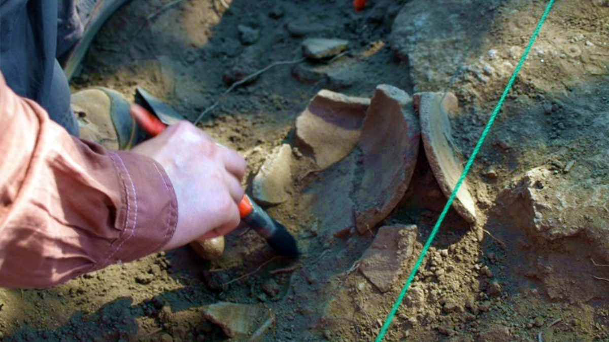
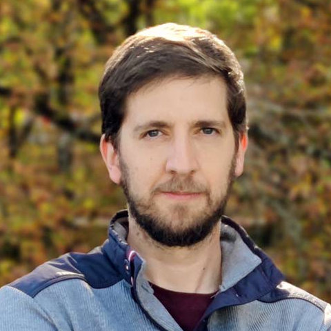
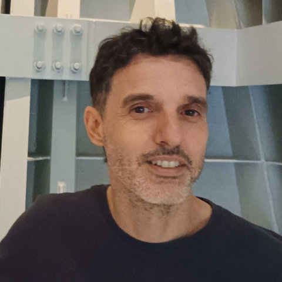
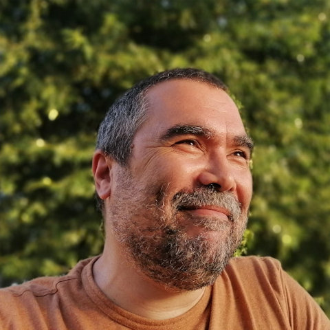
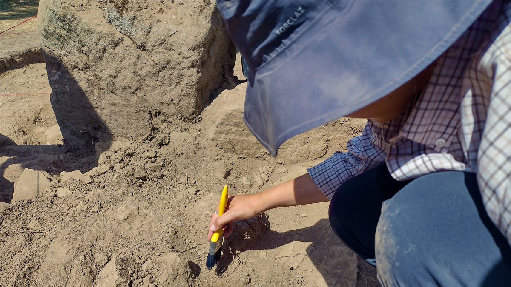

Sara Prata
Investigadora principal
IEM – NOVA FCSH
Sara Prata é arqueóloga e investigadora especializada em paisagens rurais e no período alto-medieval.

Uma análise arqueológica das práticas agrícolas alto-medievais

Uma abordagem arqueológica interdisciplinar.

Caso de estudo num contexto ibérico e europeu, séculos V-VIII.
Uma análise arqueológica das práticas agrícolas alto-medievais
O ARCHAEMAP é um projeto de investigação centrado no passado, presente e futuro das paisagens rurais, utilizando uma abordagem arqueológica interdisciplinar.
O plano de trabalhos está estruturado em torno de duas questões principais: 1) Como é que as comunidades alto-medievais transformaram as paisagens rurais? 2) Como podemos utilizar este conhecimento para promover um futuro mais sustentável?
O projeto ARCHAEMAP centra-se nos primeiros séculos do período alto-medieval (séculos V-VIII). Este é um dos períodos mais intensos de transformação política, social e económica na Península Ibérica, mas muito pouco se sabe sobre como estas mudanças impactaram a forma como as pessoas levavam a cabo as atividades agrícolas.
O projeto reúne métodos de análise espacial, arqueologia ambiental e modelação 3D para preencher este vazio de conhecimento. Tomando o Alto Alentejo como caso de estudo num contexto Ibérico e Europeu, o projeto beneficia de uma larga trajetória de investigação arqueológica. Irão ser realizados novos trabalhos de campo e sistematizados resultados de projetos anteriores na região.
O ARCHAEMAP é um projeto individual de I&D com a duração de 18 meses (2026-2028) coordenado pela investigadora Sara Prata e financiado pela Fundação para a Ciência e Tecnologia (FCT) através do programa RESTART. O projeto é acolhido pelo Instituto de Estudos Medievais (IEM) da Faculdade de Ciências Sociais e Humanas da Universidade NOVA de Lisboa (NOVA FCSH).


Investigadora principal
IEM – NOVA FCSH
Sara Prata é arqueóloga e investigadora especializada em paisagens rurais e no período alto-medieval.

IEM – NOVA FCSH
Arqueólogo especializado em análise espacial e visualização do património.

IEM – NOVA FCSH
Arqueobotânico dedicado ao estudo da evolução dos sistemas agrícolas e das transformações ambientais.

TI, Web, 3D.
Escreva-nos para
